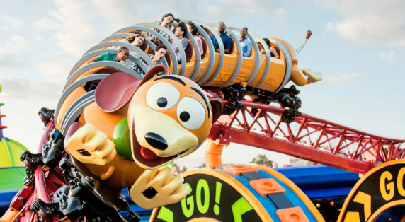
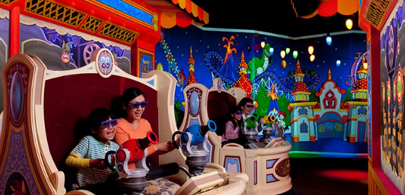
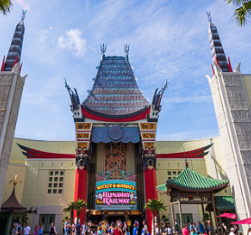
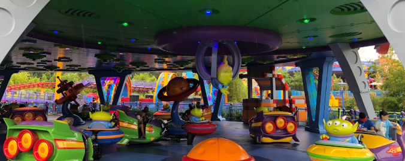
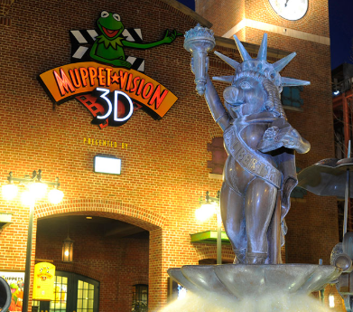

Hollywood Studios - Kid Friendly Day
A day for the whole family to enjoy at Epcot. Making sure that you get to the parks early is very important especially if you have kids that don't like to wait in long lines. By getting to the parks early you eliminate time that you would be wasting in lines.
Slinky Dog Dash
The first ride that you want to go to when you are at Hollywood Studios is Slinky Dog Dash. Now it is imporant to remeber that this is a little roaller caoster so you will need to make sure that your kid is tall enough to ride. This ride is still very fun and it lets those little kids go on a roller coaster that is not that scary.
Toy Story Mania
This ride is right next to the first one so this is perfect if you are trying to hit them all at once. This ride is perfect for the whole family and allows everyone to imporving their aiming skills. This is a 3D ride though so make sure you are okay with wearing those glasses.
Micky and Minnie's Runaway Railway
This is like going through a small movie with Mickey and Minnie. You will get tossed around and maybe a little wet but it is deffinetly where you want to go to after Toy Story Mania as it can build up quite the line.
Alien Swirling Saucers
Head back over to Toy Story land where you will ride Alien Swirling Saucers. Now you do spin a lot on this ride so if you get dizy this may not be the best ride for you. However kids love it.
Muppet Vision 3D
This is the perfect way to end your day. By going to where Muppet Vision 3D is located there is almost never any wait time and it is a perfect 10 minute show that allows you to take a break from watching and enjoy how funny all of the Muppets are.